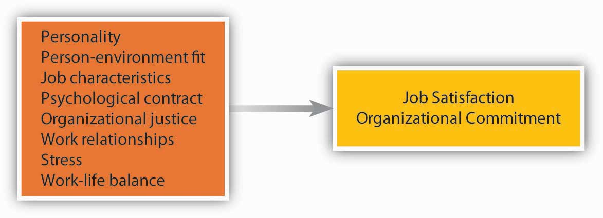
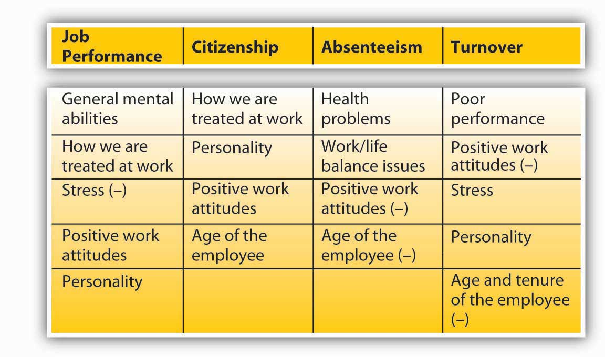

After reading this chapter, you should be able to do the following:
Who are your best customers? Which customers are bringing you the most profits and which are the least profitable? Companies are increasingly relying on complicated data mining software to answer these and other questions. More than 92% of the top 100 companies on the Fortune Global 500 list are using software developed by SAS Institute Inc., the world’s largest privately held software company, for their business intelligence and analytical needs. The Cary, North Carolina, company is doing extremely well by any measure. They have over 10,000 employees worldwide, operate in over 100 countries, and reported $2.31 billion in revenue in 2009 (their 33rd consecutive year of growth and profitability). The company is quick to attribute their success to the performance and loyalty of their workforce. This is directly correlated with how they treat their employees.
SAS has perfected the art of employee management. It has been ranked on Fortune magazine’s best places to work list every year since the list was first published. Employees seem to genuinely enjoy working at SAS and are unusually attached to the company, resulting in a turnover rate that is less than 4% in an industry where 20% is the norm. In fact, when Google designed their own legendary campus in California, they visited the SAS campus to get ideas.
One thing SAS does well is giving its employees opportunities to work on interesting and challenging projects. The software developers have the opportunity to develop cutting-edge software to be used around the world. The company makes an effort to concentrate its business in the areas of analytics, which add the most value and help organizations best analyze disparate data for decision making, creating opportunities for SAS workers to be challenged. Plus, the company removes obstacles for employees. Equipment, policies, rules, and meetings that could impede productivity are eliminated.
The company has a reputation as a pioneer when it comes to the perks it offers employees, but these perks are not given with a mentality of “offer everything but the kitchen sink.” There is careful thinking and planning behind the choice of perks the company offers. SAS conducts regular employee satisfaction surveys, and any future benefits and perks offered are planned in response to the results. The company wants to eliminate stressors and anything that dissatisfies from people’s lives. To keep employees healthy and fit, there are athletic fields; a full gym; a swimming pool; and tennis, basketball, and racquetball courts on campus. Plus, the company offers free on-site health care for employees, covers dependents at their fully staffed primary medical care center, and offers unlimited sick leave. The company understands that employees have a life and encourages employees to work reasonable hours and then go home to their families. In fact, a famous motto in the company is, “If you are working for more than 8 hours, you are just adding bugs.” SAS is truly one of the industry leaders in leveraging its treatment of people for continued business success.
Case written by [citation redacted per publisher request]. Based on information from Doing well by being rather nice. (2007, December 1). Economist. Retrieved April 30, 2010, from http://www.financialexpress.com/news/doing-well-by-being-rather-nice/247090; Cakebread, C. (2005, July). SAS…not SOS. Benefits Canada, 29(7), 18; Florida, R., & Goodnight, J. (2005, July–August). Managing for creativity. Harvard Business Review, 83(7/8), 124–131; Karlgaard, R. (2006, October 16). Who wants to be public? Forbes Asia, 2(17), 22.
Our behavior at work often depends on how we feel about being there. Therefore, making sense of how people behave depends on understanding their work attitudes. An attitudeOur opinions, beliefs, and feelings about aspects of our environment. refers to our opinions, beliefs, and feelings about aspects of our environment. We have attitudes toward the food we eat, people we interact with, courses we take, and various other things. At work, two particular job attitudes have the greatest potential to influence how we behave. These are job satisfaction and organizational commitment. Job satisfactionThe feelings people have toward their jobs. refers to the feelings people have toward their job. If the number of studies conducted on job satisfaction is an indicator, job satisfaction is probably the most important job attitude. Institutions such as Gallup Inc. or the Society of Human Resource Management (SHRM) periodically conduct studies of job satisfaction to track how satisfied employees are at work. According to a recent Gallup survey, 90% of the employees surveyed said that they were at least somewhat satisfied with their jobs. The recent SHRM study revealed 40% who were very satisfied.What keeps employees satisfied? (2007, August). HR Focus, pp. 10–13; Sandberg, J. (2008, April 15). For many employees, a dream job is one that isn’t a nightmare. Wall Street Journal, p. B1. Organizational commitmentThe emotional attachment people have toward the company they work for. is the emotional attachment people have toward the company they work for. There is a high degree of overlap between job satisfaction and organizational commitment, because things that make us happy with our job often make us more committed to the company as well. Companies believe that these attitudes are worth tracking because they are often associated with important outcomes such as performance, helping others, absenteeism, and turnover.
How strong is the attitude-behavior link? First of all, it depends on the attitude in question. Your attitudes toward your colleagues may influence whether you actually help them on a project, but they may not be a good predictor of whether you will quit your job. Second, it is worth noting that attitudes are more strongly related to intentions to behave in a certain way, rather than actual behaviors. When you are dissatisfied with your job, you may have the intention to leave. Whether you will actually leave is a different story! Your leaving will depend on many factors, such as availability of alternative jobs in the market, your employability in a different company, and sacrifices you have to make while changing jobs. In other words, while attitudes give us hints about how a person might behave, it is important to remember that behavior is also strongly influenced by situational constraints.
What makes you satisfied with your job and develop commitment to your company? Research shows that people pay attention to several aspects of their work environment, including how they are treated, the relationships they form with colleagues and managers, and the actual work they perform. We will now summarize the factors that show consistent relations with job satisfaction and organizational commitment.
Figure 4.2 Factors Contributing to Job Satisfaction and Organizational Commitment
Can assessing the work environment fully explain how satisfied we are on the job? Interestingly, some experts have shown that job satisfaction is not purely environmental and is partially due to our personality. Some people have a disposition to be happy in life and at work regardless of environmental factors.
It seems that people who have a positive affective disposition (those who have a tendency to experience positive moods more often than negative moods) tend to be more satisfied with their jobs and more committed to their companies, while those who have a negative disposition tend to be less satisfied and less committed.Connolly, J. J., & Viswesvaran, C. (2000). The role of affectivity in job satisfaction: A meta-analysis. Personality and Individual Differences, 29, 265–281; Thoresen, C. J., Kaplan, S. A., Barsky, A. P., de Chermont, K., & Warren, C. R. (2003). The affective underpinnings of job perceptions and attitudes: A meta-analytic review and integration. Psychological Bulletin, 129, 914–945. This is not surprising, as people who are determined to see the glass as half full will notice the good things in their work environment, while those with the opposite character will find more things to complain about. In addition to our affective disposition, people who have a neurotic personality (those who are moody, temperamental, critical of themselves and others) are less satisfied with their job, while those who are emotionally more stable tend to be more satisfied. Other traits such as conscientiousness, self-esteem, locus of control, and extraversion are also related to positive work attitudes.Judge, T. A., Heller, D., & Mount, M. K. (2002). Five-factor model of personality and job satisfaction: A meta-analysis. Journal of Applied Psychology, 87, 530–541; Judge, T. A., & Bono, J. E. (2001). Relationship of core self-evaluations traits—self esteem, generalized self efficacy, internal locus of control, and emotional stability—with job satisfaction and job performance: A meta-analysis. Journal of Applied Psychology, 86, 80–92; Zimmerman, R. D. (2008). Understanding the impact of personality traits on individuals’ turnover decisions: A meta-analytic path model. Personnel Psychology, 61, 309–348. Either these people are more successful in finding jobs and companies that will make them happy and build better relationships at work, which would increase their satisfaction and commitment, or they simply see their environment as more positive—whichever the case, it seems that personality is related to work attitudes.
The fit between what we bring to our work environment and the environmental demands influences our work attitudes. Therefore, person–job fit and person–organization fit are positively related to job satisfaction and commitment. When our abilities match job demands and our values match company values, we tend to be more satisfied with our job and more committed to the company we work for.Kristof-Brown, A. L., Zimmerman, R. D., & Johnson, E. C. (2005). Consequences of individuals’ fit at work: A meta-analysis of person-job, person-organization, person-group, and person-supervisor fit. Personnel Psychology, 58, 281–342; Verquer, M. L., Beehr, T. A., & Wagner, S. H. (2003). A meta-analysis of relations between person-organization fit and work attitudes. Journal of Vocational Behavior, 63, 473–489.
The presence of certain characteristics on the job seems to make employees more satisfied and more committed. Using a variety of skills, having autonomy at work, receiving feedback on the job, and performing a significant task are some job characteristics that are related to satisfaction and commitment. However, the presence of these factors is not important for everyone. Some people have a high growth need. They expect their jobs to help them build new skills and improve as an employee. These people tend to be more satisfied when their jobs have these characteristics.Loher, B. T., Noe, R. A., Moeller, N. L., & Fitzgerald, M. P. (1985). A meta-analysis of the relation of job characteristics to job satisfaction. Journal of Applied Psychology, 70, 280–289; Mathieu, J. E., & Zajac, D. M. (1990). A review and meta-analysis of the antecedents, correlates, and consequences of organizational commitment. Psychological Bulletin, 108, 171–194.
After accepting a job, people come to work with a set of expectations. They have an understanding of their responsibilities and rights. In other words, they have a psychological contractAn unwritten understanding about what the employee will bring to the work environment and what the company will provide in exchange. with the company. A psychological contract is an unwritten understanding about what the employee will bring to the work environment and what the company will provide in exchange. When people do not get what they expect, they experience a psychological contract breachViolation of the unwritten understanding between the employee and the organization regarding expectations., which leads to low job satisfaction and commitment. Imagine that you were told before being hired that the company was family friendly and collegial. However, after a while, you realize that they expect employees to work 70 hours a week, and employees are aggressive toward each other. You are likely to experience a breach in your psychological contract and be dissatisfied. One way of preventing such problems is for companies to provide realistic job previews to their employees.Premack, S. L., & Wanous, J. P. (1985). A meta-analysis of realistic job preview experiments. Journal of Applied Psychology, 70, 706–719; Wanous, J. P., Poland, T. D., Premack, S. L., & Davis, K. S. (1992). The effects of met expectations on newcomer attitudes and behaviors: A review and meta-analysis. Journal of Applied Psychology, 77, 288–297; Zhao, H., Wayne, S. J., Glibkowski, B. C., & Bravo, J. (2007). The impact of psychological contract breach on work-related outcomes: A meta-analysis. Personnel Psychology, 60, 647–680.
A strong influence over our satisfaction level is how fairly we are treated. People pay attention to the fairness of company policies and procedures, treatment from supervisors, and pay and other rewards they receive from the company.Cohen-Charash, Y., & Spector, P. E. (2001). The role of justice in organizations: A meta-analysis. Organizational Behavior and Human Decision Processes, 86, 278–321; Colquitt, J. A., Conlon, D. E., Wesson, M. J., Porter, C. O. L. H., & Ng, K. Y. (2001). Justice at the millennium: A meta-analytic review of 25 years of organizational justice research. Journal of Applied Psychology, 86, 425–445; Meyer, J. P., Stanley, D. J., Herscivitch, L., & Topolnytsky, L. (2002). Affective, continuance, and normative commitment to the organization: A meta-analysis of antecedents, correlates, and consequences. Journal of Vocational Behavior, 61, 20–52.
Two strong predictors of our happiness at work and commitment to the company are our relationships with coworkers and managers. The people we interact with, their degree of compassion, our level of social acceptance in our work group, and whether we are treated with respect are all important factors surrounding our happiness at work. Research also shows that our relationship with our manager, how considerate the manager is, and whether we build a trust-based relationship with our manager are critically important to our job satisfaction and organizational commitment.Bauer, T. N., Bodner, T., Erdogan, B., Truxillo, D. M., & Tucker, J. S. (2007). Newcomer adjustment during organizational socialization: A meta-analytic review of antecedents, outcomes, and methods. Journal of Applied Psychology, 92, 707–721; Gerstner, C. R., & Day, D. V. (1997). Meta-analytic review of leader-member exchange theory: Correlates and construct issues. Journal of Applied Psychology, 82(6), 827–844; Judge, T. A., Piccolo, R. F., & Ilies, R. (2004). The forgotten ones? The validity of consideration and initiating structure in leadership research. Journal of Applied Psychology, 89, 36–51; Kinicki, A. J., McKee-Ryan, F. M., Schriesheim, C. A., & Carson, K. P. (2002). Assessing the construct validity of the job descriptive index: A review and meta-analysis. Journal of Applied Psychology, 87, 14–32; Mathieu, J. E., & Zajac, D. M. (1990). A review and meta-analysis of the antecedents, correlates, and consequences of organizational commitment. Psychological Bulletin, 108, 171–194; Meyer, J. P., Stanley, D. J., Herscivitch, L., & Topolnytsky, L. (2002). Affective, continuance, and normative commitment to the organization: A meta-analysis of antecedents, correlates, and consequences. Journal of Vocational Behavior, 61, 20–52; Rhoades, L., & Eisenberger, R. (2002). Perceived organizational support: A review of the literature. Journal of Applied Psychology, 87, 698–714. When our manager and upper management listen to us, care about us, and value our opinions, we tend to feel good at work. Even small actions may show employees that the management cares about them. For example, Hotel Carlton in San Francisco was recently taken over by a new management group. One of the small things the new management did created dramatic results. In response to an employee attitude survey, they replaced the old vacuum cleaners housekeepers were using and established a policy of replacing them every year. This simple act of listening to employee problems and taking action went a long way to making employees feel that the management cares about them.Dvorak, P. (2007, December 17). Theory and practice: Hotelier finds happiness keeps staff checked in: Focus on morale boosts Joie de Vivre’s grades from workers, guests. Wall Street Journal, p. B3.
Not surprisingly, the amount of stress present in our job is related to our satisfaction and commitment. For example, experiencing role ambiguity (vagueness in relation to what our responsibilities are), role conflict (facing contradictory demands at work), and organizational politics, and worrying about the security of our job are all stressors that make people dissatisfied. On the other hand, not all stress is bad. Some stressors actually make us happier! For example, working under time pressure and having a high degree of responsibility are stressful, but they can also be perceived as challenges and tend to be related to high levels of satisfaction.Kinicki, A. J., McKee-Ryan, F. M., Schriesheim, C. A., & Carson, K. P. (2002). Assessing the construct validity of the job descriptive index: A review and meta–analysis. Journal of Applied Psychology, 87, 14–32; Meyer, J. P., Stanley, D. J., Herscivitch, L., & Topolnytsky, L. (2002). Affective, continuance, and normative commitment to the organization: A meta-analysis of antecedents, correlates, and consequences. Journal of Vocational Behavior, 61, 20–52; Miller, B. K., Rutherford, M. A., & Kolodinsky, R. W. (2008). Perceptions of organizational politics: A meta-analysis of outcomes. Journal of Business and Psychology, 22, 209–222; Podsakoff, N. P., LePine, J. A., & LePine, M. A. (2007). Differential challenge stressor-hindrance stressor relationships with job attitudes, turnover intentions, turnover, and withdrawal behavior: A meta-analysis. Journal of Applied Psychology, 92, 438–454.
In the 1950s, people’s work was all-consuming. Employees went to work, worked long hours, and the rest of the family accepted that work came first. As society changed, the concept of always putting work first became outdated. In modern times, more employees expect to lead balanced lives, pursue hobbies, and spend more time with their children while at the same time continuing to succeed at work. The notion of work–family conflict is one cause of job dissatisfaction. This conflict can be particularly strong for women because of the time necessary for pregnancy and giving birth, but men struggle with it as well. When work life interferes with family life, we are more stressed and unhappy with our jobs. Research shows that policies that help employees achieve a balance between their work and personal lives, such as allowing telecommuting, are related to higher job satisfaction. For example, the medical resources group of the pharmaceutical company AstraZeneca International does not have fixed working hours, and employees can work any hours they choose. Motorola’s technological acceleration group also has flexible hours and can work from anywhere (home, office, or a coffee shop) at anytime.Ernst Kossek, E., & Ozeki, C. (1998). Work-family conflict, policies, and the job-life satisfaction relationship: A review and directions for organizational behavior-human resources research. Journal of Applied Psychology, 83, 139–149; Gajendran, R. S., & Harrison, D. A. (2007). The good, the bad, and the unknown about telecommuting: Meta-analysis of psychological mediators and individual consequences. Journal of Applied Psychology, 92, 1524–1541; Shellenbarger, S. (2007, October 4). What makes a company a great place to work today. Wall Street Journal, p. D1.
Why do we care about the job satisfaction and organizational commitment of employees? What behaviors would you expect to see from someone who has more positive work attitudes?
If you say “higher performance,” you have stumbled upon one of the most controversial subjects in organizational behavior. Many studies have been devoted to understanding whether happy employees are more productive. Some studies show weak correlations between satisfaction and performance while others show higher correlations (what researchers would call “medium-sized” correlations of 0.30).Iaffaldano, M. T., & Muchinsky, P. M. (1985). Job satisfaction and job performance: A meta-analysis. Psychological Bulletin, 97, 251–273; Judge, T. A., Thoresen, C. J., Bono, J. E., & Patton, G. T. (2001). The job satisfaction—job performance relationship: A qualitative and quantitative review. Journal of Applied Psychology, 127, 376–407; Petty, M. M., McGee, G. W., & Cavender, J. W. (1984). A meta-analysis of the relationships between individual job satisfaction and individual performance. Academy of Management Review, 9, 712–721; Riketta, M. (2008). The causal relation between job attitudes and performance: A meta-analysis of panel studies. Journal of Applied Psychology, 93, 472–481. The correlation between commitment and performance tends to be even weaker.Mathieu, J. E., & Zajac, D. M. (1990). A review and meta-analysis of the antecedents, correlates, and consequences of organizational commitment. Psychological Bulletin, 108, 171–194; Riketta, M. (2002). Attitudinal organizational commitment and job performance: A meta-analysis. Journal of Organizational Behavior, 23, 257–266; Wright, T. A., & Bonnett, D. G. (2002). The moderating effects of employee tenure on the relation between organizational commitment and job performance: A meta-analysis. Journal of Applied Psychology, 87, 1183–1190. Even with a correlation of 0.30 though, the relationship may be lower than you may have expected. Why is this so?
It seems that happy workers have an inclination to be more engaged at work. They may want to perform better. They may be more motivated. But there are also exceptions. Think about this: Just because you want to perform, will you actually be a higher performer? Chances are that your skill level in performing the job will matter. There are also some jobs where performance depends on factors beyond an employee’s control, such as the pace of the machine they are working on. Because of this reason, in professional jobs such as engineering and research, we see a higher link between work attitudes and performance, as opposed to manual jobs such as assembly line work.Riketta, M. (2002). Attitudinal organizational commitment and job performance: A meta-analysis. Journal of Organizational Behavior, 23, 257–266. Also, think about the alternative possibility: If you don’t like your job, does this mean that you will reduce your performance? Maybe up to a certain point, but there will be factors that prevent you from reducing your performance: the fear of getting fired, the desire to get a promotion so that you can get out of the job that you dislike so much, or your professional work ethic. As a result, we should not expect a one-to-one relationship between satisfaction and performance. Still, the observed correlation between work attitudes and performance is important and has practical value.
Work attitudes are even more strongly related to organizational citizenship behaviors (behaviors that are not part of our job but are valuable to the organization, such as helping new employees or working voluntary overtime). Satisfied and committed people are absent less frequently and for shorter duration, are likely to stay with a company longer, and demonstrate less aggression at work. Just as important, people who are happy at work are happier with their lives overall. Given that we spend so much of our waking hours at work, it is no surprise that our satisfaction with our job is a big part of how satisfied we feel about life in general.Brush, D. H., Moch, M. K., & Pooyan, A. (1987). Individual demographic differences and job satisfaction. Journal of Occupational Behaviour, 8, 139–156; Carsten, J. M., & Spector, P. E. (1987). Unemployment, job satisfaction, and employee turnover: A meta-analytic test of the Muchinsky model. Journal of Applied Psychology, 72, 374–381; Cohen, A. (1991). Career stage as a moderator of the relationships between organizational commitment and its outcomes: A meta-analysis. Journal of Occupational Psychology, 64, 253–268; Cohen, A. (1993). Organizational commitment and turnover: A meta-analysis. Academy of Management Journal, 36, 1140–1157; Cohen, A., & Hudecek, N. (1993). Organizational commitment—turnover relationship across occupational groups: A meta-analysis. Group & Organization Management, 18, 188–213; Fassina, N. E., Jones, D. A., & Uggerslev, K. L. (2008). Relationship clean-up time: Using meta-analysis and path analysis to clarify relationships among job satisfaction, perceived fairness, and citizenship behaviors. Journal of Management, 34, 161–188; Hackett, R. D. (1989). Work attitudes and employee absenteeism: A synthesis of the literature. Journal of Occupational Psychology, 62, 235–248; Herschcovis, M. S., Turner, N., Barling, J., Arnold, K. A., Dupre, K., E., Innes, M., et al. (2007). Predicting workplace aggression: A meta-analysis. Journal of Applied Psychology, 92, 228–238; Kinicki, A. J., McKee-Ryan, F. M., Schriesheim, C. A., & Carson, K. P. (2002). Assessing the construct validity of the job descriptive index: A review and meta-analysis. Journal of Applied Psychology, 87, 14–32; LePine, J. A., Erez, A., & Johnson, D. E. (2002). The nature and dimensionality of organizational citizenship behavior: A critical review and meta-analysis. Journal of Applied Psychology, 87, 52–65; Mathieu, J. E., & Zajac, D. M. (1990). A review and meta-analysis of the antecedents, correlates, and consequences of organizational commitment. Psychological Bulletin, 108, 171–194; Meyer, J. P., Stanley, D. J., Herscivitch, L., & Topolnytsky, L. (2002). Affective, continuance, and normative commitment to the organization: A meta-analysis of antecedents, correlates, and consequences. Journal of Vocational Behavior, 61, 20–52; Organ, D. W., & Ryan, K. (1995). A meta-analytic review of attitudinal and dispositional predictors of organizational citizenship behavior. Personnel Psychology, 48, 775–802; Randall, D. M. (1990). The consequences of organizational commitment: Methodological investigation. Journal of Organizational Behavior, 11, 361–378; Scott, K. D., & Taylor, G. S. (1985). An examination of conflicting findings on the relationship between job satisfaction and absenteeism: A meta-analysis. Academy of Management Journal, 28, 599–612; Tait, M., Padgett, M. Y., & Baldwin, T. T. (1989). Job and life satisfaction: A reevaluation of the strength of the relationship and gender effects as a function of the date of the study. Journal of Applied Psychology, 74, 502–507; Tett, R. P., & Meyer, J. P. (1993). Job satisfaction, organizational commitment, turnover intentions, and turnover: Path analyses based on meta-analytic findings. Personnel Psychology, 46, 259–293; Zimmerman, R. D. (2008). Understanding the impact of personality traits on individuals’ turnover decisions: A meta-analytic path model. Personnel Psychology, 61, 309–348. Finally, a satisfied workforce seems to be related to positive firm-level outcomes, such as customer satisfaction and loyalty, profitability, and safety in the workplace.Harter, J. K., Schmidt, F. L., & Hayes, T. L. (2002). Business-unit-level relationship between employee satisfaction, employee engagement, and business outcomes: A meta-analysis. Journal of Applied Psychology, 87, 268–279.
Given that work attitudes may give us clues as to who will leave or stay, who will perform better, and who will be more engaged, tracking satisfaction and commitment levels is a helpful step for companies. If there are companywide issues that make employees unhappy and disengaged, then these issues need to be resolved. There are at least two systematic ways in which companies can track work attitudes: through attitude surveysSurveys that are given to employees periodically to track their work attitudes. and exit interviews. Companies such as KFC Corporation and Long John Silver’s Inc. restaurants, the SAS Institute, Google, and others give periodic surveys to employees to track their work attitudes. Companies can get more out of these surveys if responses are held confidential. If employees become concerned that their individual responses will be shared with their immediate manager, they are less likely to respond honestly. Moreover, the success of these surveys depends on the credibility of management in the eyes of employees. If management periodically collects these surveys but no action comes out of them, employees may adopt a more cynical attitude and start ignoring these surveys, hampering the success of future efforts.
An exit interviewA meeting with the departing employee. involves a meeting with the departing employee. This meeting is often conducted by a member of the human resource management department. The departing employee’s manager is the worst person to conduct the interview, because managers are often one of the primary reasons an employee is leaving in the first place. If conducted well, this meeting may reveal what makes employees dissatisfied at work and give management clues about areas for improvement.
Work attitudes are the feelings we have toward different aspects of the work environment. Job satisfaction and organizational commitment are two key attitudes that are the most relevant to important outcomes. Attitudes create an intention to behave in a certain way and may predict actual behavior under certain conditions. People develop positive work attitudes as a result of their personality, fit with their environment, stress levels they experience, relationships they develop, perceived fairness of their pay, company policies, interpersonal treatment, whether their psychological contract is violated, and the presence of policies addressing work–life conflict. When people have more positive work attitudes, they may have the inclination to perform better, display citizenship behaviors, and be absent less often and for shorter periods of time, and they are less likely to quit their jobs within a short period of time. When workplace attitudes are more positive, companies benefit in the form of higher safety and better customer service, as well as higher company performance.
One of the important objectives of the field of organizational behavior is to understand why people behave the way they do. Which behaviors are we referring to here? We will focus on four key work behaviors: job performance, organizational citizenship behaviors, absenteeism, and turnover. These are not the only behaviors OB is concerned about, but understanding what is meant by these terms and understanding the major influences over each type of behavior will give you more clarity about analyzing the behaviors of others in the workplace. We summarize the major research findings about the causes of each type of behavior in the following figure.
Figure 4.4
Summary of Factors That Have the Strongest Influence Over Work Behaviors. Note: Negative relationships are indicated with (–).
Job performanceOr in-role performance, refers to the performance level on factors included in the job description., or in-role performance, refers to the performance level on factors included in the job description. For each job, the content of job performance may differ. Measures of job performance include the quality and quantity of work performed by the employee, the accuracy and speed with which the job is performed, and the overall effectiveness of the person performing the job. In many companies, job performance determines whether a person is promoted, rewarded with pay raises, given additional responsibilities, or fired from the job. Therefore, job performance is tracked and observed in many organizations and is one of the main outcomes studied in the field of organizational behavior.
Under which conditions do people perform well, and what are the characteristics of high performers? These questions received a lot of research attention. It seems that the most powerful influence over our job performance is our general mental abilityOr cognitive abilities, refers to our reasoning abilities, verbal and numerical skills, analytical skills, and overall intelligence level., or cognitive abilities. Our reasoning abilities, verbal and numerical skills, analytical skills, and overall intelligence level seems to be important across most situations. It seems that general mental ability starts influencing us early in life; it is strongly correlated with measures of academic success.Kuncel, N. R., Hezlett, S. A., & Ones, D. S. (2004). Academic performance, career potential, creativity, and job performance: Can one construct predict them all? Journal of Personality and Social Psychology, 86, 148–161. As we grow and mature, cognitive ability is also correlated with different measures of job performance.Bertua, C., Anderson, N., & Salgado, J. F. (2005). The predictive validity of cognitive ability tests: A UK meta-analysis. Journal of Occupational and Organizational Psychology, 78, 387–409; Kuncel, N. R., Hezlett, S. A., & Ones, D. S. (2004). Academic performance, career potential, creativity, and job performance: Can one construct predict them all? Journal of Personality and Social Psychology, 86, 148–161; Salgado, J. F., Anderson, N., Moscoso, S., Bertua, C., de Fruyt, F., & Rolland, J. P. (2003). A meta-analytic study of general mental ability validity for different occupations in the European community. Journal of Applied Psychology, 88, 1068–1081; Schmidt, F. L., & Hunter, J. (2004). General mental ability of the world of work: Occupational attainment and job performance. Journal of Personality and Social Psychology, 86(1), 162–173; Vinchur, A. J., Schippmann, J. S., Switzer, F. S., & Roth, P. L. (1998). A meta-analytic review of predictors of job performance for salespeople. Journal of Applied Psychology, 83, 586–597. General mental ability is important for job performance across different settings, but there is also variation. In jobs with high complexity, it is much more critical to have high general mental abilities. In jobs such as working in sales, management, engineering, or other professional areas, this ability is much more important, whereas for jobs involving manual labor or clerical work, the importance of high mental abilities for high performance is weaker (yet still important).
How we are treated within an organization is another factor determining our performance level. When we feel that we are being treated fairly by a company, have a good relationship with our manager, have a manager who is supportive and rewards high performance, and we trust the people we work with, we tend to perform better. Why? It seems that when we are treated well, we want to reciprocate. Therefore, when we are treated well, we treat the company well by performing our job more effectively.Colquitt, J. A., Conlon, D. E., Wesson, M. J., Porter, C. O. L. H., & Ng, K. Y. (2001). Justice at the millennium: A meta-analytic review of 25 years of organizational justice research. Journal of Applied Psychology, 86, 425–445; Colquitt, J. A., Scott, B. A., & LePine, J. A. (2007). Trust, trustworthiness, and trust propensity: A meta-analytic test of their unique relationships with risk taking and job performance. Journal of Applied Psychology, 92, 909–927; Podsakoff, P. M., MacKenzie, S. B., & Bommer, W. H. (1996). Meta-analysis of the relationships between Kerr and Jermier’s substitutes for leadership and employee job attitudes, role perceptions, and performance. Journal of Applied Psychology, 81, 380–399.
Following the quality of treatment, the stress we experience determines our performance level. When we experience high levels of stress, our mental energies are drained. Instead of focusing on the task at hand, we start concentrating on the stressor and become distracted trying to cope with it. Because our attention and energies are diverted to deal with stress, our performance suffers. Having role ambiguity and experiencing conflicting role demands are related to lower performance.Gilboa, S., Shirom, A., Fried, Y., & Cooper, C. (2008). A meta-analysis of work demand stressors and job performance: Examining main and moderating effects. Personnel Psychology, 61, 227–271. Stress that prevents us from doing our jobs does not have to be related to our experiences at work. For example, according to a survey conducted by Workplace Options, 45% of the respondents said that financial stress affects work performance. When people are in debt, are constantly worrying about mortgage or tuition payments, or are having trouble paying for essentials such as gas and food, their performance will suffer.Financial stress: The latest worker risk. (2008). HR Focus, 85(6), 12.
Our work attitudes, specifically job satisfaction, are moderate correlates of job performance. When we are satisfied with the job, we may perform better. This relationship seems to exist in jobs with greater levels of complexity and weakens in simpler and less complicated jobs. It is possible that in less complex jobs, our performance depends more on the machinery we work with or organizational rules and regulations. In other words, people may have less leeway to reduce performance in these jobs. Also, in some jobs people do not reduce their performance even when dissatisfied. For example, among nurses there seems to be a weak correlation between satisfaction and performance. Even when they are unhappy, nurses put substantial effort into their work, likely because they feel a moral obligation to help their patients.Judge, T. A., Thoresen, C. J., Bono, J. E., & Patton, G. T. (2001). The job satisfaction—job performance relationship: A qualitative and quantitative review. Journal of Applied Psychology, 127, 376–407.
Finally, job performance has a modest relationship with personality, particularly conscientiousness. People who are organized, reliable, dependable, and achievement-oriented seem to outperform others in various contexts.Barrick, M. R., & Mount, M. K. (1991). The Big Five personality dimensions and job performance: A meta-analysis. Personnel Psychology, 44, 1–26; Dudley, N. M., Orvis, K. A., Lebiecki, J. E., & Cortina, J. M. (2006). A meta-analytic investigation of conscientiousness in the prediction of job performance: Examining the intercorrelations and the incremental validity of narrow traits. Journal of Applied Psychology, 91, 40–57; Vinchur, A. J., Schippmann, J. S., Switzer, F. S., & Roth, P. L. (1998). A meta-analytic review of predictors of job performance for salespeople. Journal of Applied Psychology, 83, 586–597.
While job performance refers to the performance of duties listed in one’s job description, organizational citizenship behaviors involve performing behaviors that are more discretionary. Organizational citizenship behaviors (OCB)Voluntary behaviors employees perform to help others and benefit the organization. are voluntary behaviors employees perform to help others and benefit the organization. Helping a new coworker understand how things work in your company, volunteering to organize the company picnic, and providing suggestions to management about how to improve business processes are some examples of citizenship behaviors. These behaviors contribute to the smooth operation of business.
What are the major predictors of citizenship behaviors? Unlike performance, citizenship behaviors do not depend so much on one’s abilities. Job performance, to a large extent, depends on our general mental abilities. When you add the education, skills, knowledge, and abilities that are needed to perform well, the role of motivation in performance becomes more limited. As a result, someone being motivated will not necessarily translate into a person performing well. For citizenship behaviors, the motivation-behavior link is clearer. We help others around us if we feel motivated to do so.
Perhaps the most important factor explaining our citizenship behaviors is how we are treated by the people around us. When we have a good relationship with our manager and we are supported by management staff, when we are treated fairly, when we are attached to our peers, and when we trust the people around us, we are more likely to engage in citizenship behaviors. A high-quality relationship with people we work with will mean that simply doing our job will not be enough to maintain the relationship. In a high-quality relationship, we feel the obligation to reciprocate and do extra things to help those around us.Cohen-Charash, Y., & Spector, P. E. (2001). The role of justice in organizations: A meta-analysis. Organizational Behavior and Human Decision Processes, 86, 278–321; Colquitt, J. A., Conlon, D. E., Wesson, M. J., Porter, C. O. L. H., & Ng, K. Y. (2001). Justice at the millennium: A meta-analytic review of 25 years of organizational justice research. Journal of Applied Psychology, 86, 425–445; Colquitt, J. A., Scott, B. A., & LePine, J. A. (2007). Trust, trustworthiness, and trust propensity: A meta-analytic test of their unique relationships with risk taking and job performance. Journal of Applied Psychology, 92, 909–927; Fassina, N. E., Jones, D. A., & Uggerslev, K. L. (2008). Relationship clean-up time: Using meta-analysis and path analysis to clarify relationships among job satisfaction, perceived fairness, and citizenship behaviors. Journal of Management, 34, 161–188; Hoffman, B. J., Blair, C. A., Meriac, J. P., & Woehr, D. J. (2007). Expanding the criterion domain? A quantitative review of the OCB literature. Journal of Applied Psychology, 92, 555–566; Ilies, R., Nahrgang, J. D., & Morgeson, F. P. (2007). Leader-member exchange and citizenship behaviors: A meta-analysis. Journal of Applied Psychology, 92, 269–277; LePine, J. A., Erez, A., & Johnson, D. E. (2002). The nature and dimensionality of organizational citizenship behavior: A critical review and meta-analysis. Journal of Applied Psychology, 87, 52–65; Organ, D. W., & Ryan, K. (1995). A meta-analytic review of attitudinal and dispositional predictors of organizational citizenship behavior. Personnel Psychology, 48, 775–802; Podsakoff, P. M., MacKenzie, S. B., & Bommer, W. H. (1996). Meta-analysis of the relationships between Kerr and Jermier’s substitutes for leadership and employee job attitudes, role perceptions, and performance. Journal of Applied Psychology, 81, 380–399; Riketta, M., & Van Dick, R. (2005). Foci of attachment in organizations: A meta-analytic comparison of the strength and correlates of workgroup versus organizational identification and commitment. Journal of Vocational Behavior, 67, 490–510.
Our personality is yet another explanation for why we perform citizenship behaviors. Personality is a modest predictor of actual job performance but a much better predictor of citizenship. People who are conscientious, agreeable, and have positive affectivity tend to perform citizenship behaviors more often than others.Borman, W. C., Penner, L. A., Allen, T. D., & Motowidlo, S. J. (2001). Personality predictors of citizenship performance. International Journal of Selection and Assessment, 9, 52–69; Dalal, R. S. (2005). A meta-analysis of the relationship between organizational citizenship behavior and counterproductive work behavior. Journal of Applied Psychology, 90, 1241–1255; Diefendorff, J. M., Brown, D. J., Kamin, A. M., & Lord, R. G. (2002). Examining the roles of job involvement and work centrality in predicting organizational citizenship behaviors and job performance. Journal of Organizational Behavior, 23, 93–108; Organ, D. W., & Ryan, K. (1995). A meta-analytic review of attitudinal and dispositional predictors of organizational citizenship behavior. Personnel Psychology, 48, 775–802.
Job attitudes are also moderately related to citizenship behaviors. People who are happier at work, those who are more committed to their companies, and those who have overall positive attitudes toward their work situation tend to perform citizenship behaviors more often than others. When people are unhappy, they tend to be disengaged from their jobs and rarely go beyond the minimum that is expected of them.Dalal, R. S. (2005). A meta-analysis of the relationship between organizational citizenship behavior and counterproductive work behavior. Journal of Applied Psychology, 90, 1241–1255; Diefendorff, J. M., Brown, D. J., Kamin, A. M., & Lord, R. G. (2002). Examining the roles of job involvement and work centrality in predicting organizational citizenship behaviors and job performance. Journal of Organizational Behavior, 23, 93–108; Hoffman, B. J., Blair, C. A., Meriac, J. P., & Woehr, D. J. (2007). Expanding the criterion domain? A quantitative review of the OCB literature. Journal of Applied Psychology, 92, 555–566; LePine, J. A., Erez, A., & Johnson, D. E. (2002). The nature and dimensionality of organizational citizenship behavior: A critical review and meta-analysis. Journal of Applied Psychology, 87, 52–65; Organ, D. W., & Ryan, K. (1995). A meta-analytic review of attitudinal and dispositional predictors of organizational citizenship behavior. Personnel Psychology, 48, 775–802; Riketta, M. (2002). Attitudinal organizational commitment and job performance: A meta-analysis. Journal of Organizational Behavior, 23, 257–266; Riketta, M., & Van Dick, R. (2005). Foci of attachment in organizations: A meta-analytic comparison of the strength and correlates of workgroup versus organizational identification and commitment. Journal of Vocational Behavior, 67, 490–510.
Interestingly, age seems to be related to the frequency with which we demonstrate citizenship behaviors. People who are older are better citizens. It is possible that with age, we gain more experiences to share. It becomes easier to help others because we have more accumulated company and life experiences to draw from.Ng, T. W. H., & Feldman, D. C. (2008). The relationship of age to ten dimensions of job performance. Journal of Applied Psychology, 93, 392–423.
AbsenteeismUnscheduled absences from work. refers to unscheduled absences from work. Absenteeism is costly to companies because of its unpredictable nature. When an employee has an unscheduled absence from work, companies struggle to find replacement workers at the last minute. This may involve hiring contingent workers, having other employees work overtime, or scrambling to cover for an absent coworker. The cost of absenteeism to organizations is estimated at $74 billion. According to a Mercer LLC human resource consulting study, 15% of the money spent on payroll is related to absenteeism.Conlin, M. (2007, November 12). Shirking working: The war on hooky. Business Week, 4058, 72–75; Gale, S. F. (2003). Sickened by the cost of absenteeism, companies look for solutions. Workforce Management, 82(9), 72–75.
What causes absenteeism? First we need to look at the type of absenteeism. Some absenteeism is unavoidable and is related to health reasons. For example, reasons such as lower back pain, migraines, accidents on or off the job, or acute stress are important reasons for absenteeism.Farrell, D., & Stamm, C. L. (1988). Meta-analysis of the correlates of employee absence. Human Relations, 41, 211–227; Martocchio, J. J., Harrison, D. A., & Berkson, H. (2000). Connections between lower back pain, interventions, and absence from work: A time-based meta-analysis. Personnel Psychology, 53, 595–624. Health-related absenteeism is costly, but dealing with such absenteeism by using organizational policies penalizing absenteeism is both unreasonable and unfair. A sick employee who shows up at work will infect coworkers and will not be productive. Instead, companies are finding that programs aimed at keeping workers healthy are effective in dealing with this type of absenteeism. Companies using wellness programs that educate employees about proper nutrition, help them exercise, and reward them for healthy habits are related to reduced absenteeism.Parks, K. M., & Steelman, L. A. (2008). Journal of Occupational and Organizational Psychology, 13, 58–68.
Work–life balance is another common reason for absences. Staying home to care for a sick child or relative, attending the wedding of a friend or relative, or skipping work to study for an exam are all common reasons for unscheduled absences. Companies may deal with these by giving employees more flexibility in work hours. If employees can manage their own time, they are less likely to be absent. Organizations such as Lahey Clinic Foundation Inc. at Burlington, Massachusetts, find that instead of separating sick leave and paid time off, merging them is effective in dealing with unscheduled absences. When a company has “sick leave” but no other leave for social and family obligations, employees may fake being sick and use their “sick leave.” Instead, having a single paid time off policy would allow workers to balance work and life, and allow companies to avoid unscheduled absences. Some companies such as IBM Corporation got rid of sick leave altogether and instead allow employees to take as much time as they need, as long as their work gets done.Cole, C. L. (2002). Sick of absenteeism? Get rid of sick days. Workforce, 81(9), 56–61; Conlin, M. (2007, November 12). Shirking working: The war on hooky. Business Week, 4058, 72–75; Baltes, B. B., Briggs, T. E., Huff, J. W., Wright, J. A., & Neuman, G. A. (1999). Flexible and compressed workweek schedules: A meta-analysis of their effects on work-related criteria. Journal of Applied Psychology, 84, 496–513.
Sometimes, absenteeism is a form of work withdrawal and can lead to resignation from the job. In other words, poor work attitudes lead to absenteeism. When employees are dissatisfied with their work or have low organizational commitment, they are likely to be absent more often. In other words, absenteeism is caused by the desire to avoid an unpleasant work environment in addition to related factors such as problems in job design, lack of organizational justice, extreme levels of stress, and ineffective relations with coworkers and supervisors. In this case, management may deal with absenteeism by investigating the causes of dissatisfaction and dealing with them.Farrell, D., & Stamm, C. L. (1988). Meta-analysis of the correlates of employee absence. Human Relations, 41, 211–227; Hackett, R. D. (1989). Work attitudes and employee absenteeism: A synthesis of the literature. Journal of Occupational Psychology, 62, 235–248; Scott, K. D., & Taylor, G. S. (1985). An examination of conflicting findings on the relationship between job satisfaction and absenteeism: A meta-analysis. Academy of Management Journal, 28, 599–612.
Are there personal factors contributing to absenteeism? Research does not reveal a consistent link between personality and absenteeism. One demographic criterion that predicts absenteeism is age. Interestingly, and counter to the stereotype that increased age would bring more health problems, research shows that age is negatively related to both frequency and duration of absenteeism. Because of reasons including higher loyalty to their company and a stronger work ethic, older employees are less likely be absent from work.Martocchio, J. J. (1989). Age-related differences in employee absenteeism: A meta-analysis. Psychology and Aging, 4, 409–414; Ng, T. W. H., & Feldman, D. C. (2008). The relationship of age to ten dimensions of job performance. Journal of Applied Psychology, 93, 392–423.
Do you have team members that are chronically late to group meetings? Are your coworkers driving you crazy because they are perpetually late? Here are some suggestions that may help.
Sources: Adapted from information in DeLonzor, D. (2005, November). Running late. HR Magazine, 50(11), 109–112; Grainge, Z. (2006, November 21). Spotlight on…lateness. Personnel Today, p. 33.
TurnoverAn employee’s leaving an organization. refers to an employee leaving an organization. Employee turnover has potentially harmful consequences, such as poor customer service and poor companywide performance. When employees leave, their jobs still need to be performed by someone, so companies spend time recruiting, hiring, and training new employees, all the while suffering from lower productivity. Yet, not all turnover is bad. Turnover is particularly a problem when high-performing employees leave, while a poor performer’s turnover may actually give the company a chance to improve productivity and morale.
Why do employees leave? An employee’s performance level is an important reason. People who perform poorly are actually more likely to leave. These people may be fired or be encouraged to quit, or they may quit because of their fear of being fired. If a company has pay-for-performance systems, poor performers will find that they are not earning much, owing to their substandard performance. This pay discrepancy gives poor performers an extra incentive to leave. On the other hand, instituting a pay-for-performance system does not mean that high performers will always stay with a company. Note that high performers may find it easier to find alternative jobs, so when they are unhappy, they can afford to quit their jobs voluntarily.Williams, C. R., & Livingstone, L. P. (1994). Another look at the relationship between performance and voluntary turnover. Academy of Management Journal, 37, 269–298.
Work attitudes are often the primary culprit in why people leave. When workers are unhappy at work, and when they are not attached to their companies, they are more likely to leave. Loving the things they do, being happy with the opportunities for advancement within the company, and being happy about pay are all aspects of work attitudes relating to turnover. Of course, the link between work attitudes and turnover is not direct. When employees are unhappy, they might have the intention to leave and may start looking for a job, but their ability to actually leave will depend on many factors such as their employability and the condition of the job market. For this reason, when national and regional unemployment is high, many people who are unhappy will still continue to work for their current company. When the economy is doing well, people will start moving to other companies in response to being unhappy. Many companies make an effort to keep employees happy because of an understanding of the connection between employee happiness and turnover. As illustrated in the opening case, at the SAS Institute, employees enjoy amenities such as a swimming pool, child care at work, and a 35-hour workweek. The company’s turnover is around 4%–5%. This percentage is a stark contrast to the industry average, which is in the range of 12%–20%.Carsten, J. M., & Spector, P. E. (1987). Unemployment, job satisfaction, and employee turnover: A meta-analytic test of the Muchinsky model. Journal of Applied Psychology, 72, 374–381; Cohen, A. (1991). Career stage as a moderator of the relationships between organizational commitment and its outcomes: A meta-analysis. Journal of Occupational Psychology, 64, 253–268; Cohen, A. (1993). Organizational commitment and turnover: A meta-analysis. Academy of Management Journal, 36, 1140–1157; Cohen, A., & Hudecek, N. (1993). Organizational commitment—turnover relationship across occupational groups: A meta-analysis. Group & Organization Management, 18, 188–213; Griffeth, R. W., Hom, P. W., & Gaertner, S. (2000). A meta-analysis of antecedents and correlates of employee turnover: Update, moderator tests, and research implications for the next millennium. Journal of Management, 26, 463–488; Hom, P. W., Caranikas-Walker, F., Prussia, G. E., & Griffeth, R. W. (1992). A meta-analytical structural equations analysis of a model of employee turnover. Journal of Applied Psychology, 77, 890–909; Karlgaard, R. (2006). Who wants to be public? Forbes Asia, 2(17), 22; Meyer, J. P., Stanley, D. J., Herscivitch, L., & Topolnytsky, L. (2002). Affective, continuance, and normative commitment to the organization: A meta-analysis of antecedents, correlates, and consequences. Journal of Vocational Behavior, 61, 20–52; Steel, R. P., & Ovalle, N. K. (1984). A review and meta-analysis of research on the relationship between behavioral intentions and employee turnover. Journal of Applied Psychology, 69, 673–686; Tett, R. P., & Meyer, J. P. (1993). Job satisfaction, organizational commitment, turnover intentions, and turnover: Path analyses based on meta-analytic findings. Personnel Psychology, 46, 259–293.
People are more likely to quit their jobs if they experience stress at work as well. Stressors such as role conflict and role ambiguity drain energy and motivate people to seek alternatives. For example, call-center employees experience a great deal of stress in the form of poor treatment from customers, long work hours, and constant monitoring of their every action. Companies such as EchoStar Corporation realize that one method for effectively retaining their best employees is to give employees opportunities to move to higher responsibility jobs elsewhere in the company. When a stressful job is a step toward a more desirable job, employees seem to stick around longer.Badal, J. (2006, July 24). “Career path” programs help retain workers. Wall Street Journal, p. B1; Griffeth, R. W., Hom, P. W., & Gaertner, S. (2000). A meta-analysis of antecedents and correlates of employee turnover: Update, moderator tests, and research implications for the next millennium. Journal of Management, 26, 463–488; Podsakoff, N. P., LePine, J. A., & LePine, M. A. (2007). Differential challenge stressor-hindrance stressor relationships with job attitudes, turnover intentions, turnover, and withdrawal behavior: A meta-analysis. Journal of Applied Psychology, 92, 438–454.
There are also individual differences in whether people leave or stay. For example, personality is a factor in the decision to quit one’s job. People who are conscientious, agreeable, and emotionally stable are less likely to quit their jobs. Many explanations are possible. People with these personality traits may perform better at work, which leads to lower quit rates. Additionally, they may have better relations with coworkers and managers, which is a factor in their retention. Whatever the reason, it seems that some people are likely to stay longer at any given job regardless of the circumstances.Salgado, J. F. (2002). The Big Five personality dimensions and counterproductive behaviors. International Journal of Selection and Assessment, 10, 117–125; Zimmerman, R. D. (2008). Understanding the impact of personality traits on individuals’ turnover decisions: A meta-analytic path model. Personnel Psychology, 61, 309–348.
Whether we leave a job or stay also depends on our age and how long we have been there. It seems that younger employees are more likely to leave. This is not surprising, because people who are younger will have fewer responsibilities such as supporting a household or dependents. As a result, they can quit a job they don’t like much more easily. Similarly, people who have been with a company for a short period of time may quit more easily. New employees experience a lot of stress at work, and there is usually not much keeping them in the company, such as established bonds to a manager or colleagues. New employees may even have ongoing job interviews with other companies when they start working; therefore, they may leave more easily. For example, Sprint Nextel Corporation found that many of their new hires were quitting within 45 days of their hiring dates. When they investigated, they found that newly hired employees were experiencing a lot of stress from avoidable problems such as unclear job descriptions or problems hooking up their computers. Sprint was able to solve the turnover problem by paying special attention to orienting new hires.Cohen, A. (1991). Career stage as a moderator of the relationships between organizational commitment and its outcomes: A meta-analysis. Journal of Occupational Psychology, 64, 253–268; Cohen, A. (1993). Organizational commitment and turnover: A meta-analysis. Academy of Management Journal, 36, 1140–1157; Ebeling, A. (2007). Corporate moneyball. Forbes, 179(9), 102–103.
Few people work in one company forever, and someday you may decide that your current job is no longer right for you. Here are tips on how to leave without burning any bridges.
Sources: Adapted from information in Challenger, J. E. (1992, November–December), How to leave your job without burning bridges. Women in Business, 44(6), 29; Daniels, C., & Vinzant, C. (2000, February 7). The joy of quitting, Fortune, 141(3), 199–202; Schroeder, J. (2005, November). Leaving your job without burning bridges. Public Relations Tactics, 12(11), 4; Woolnough, R. (2003, May 27). The right and wrong ways to leave your job. Computer Weekly, 55.
Employees demonstrate a wide variety of positive and negative behaviors at work. Among these behaviors, four are critically important and have been extensively studied in the OB literature. Job performance is a person’s accomplishments of tasks listed in one’s job description. A person’s abilities, particularly mental abilities, are the main predictor of job performance in many occupations. How we are treated at work, the level of stress experienced at work, work attitudes, and, to a lesser extent, our personality are also factors relating to one’s job performance. Citizenship behaviors are tasks helpful to the organization but are not in one’s job description. Performance of citizenship behaviors is less a function of our abilities and more of motivation. How we are treated at work, personality, work attitudes, and our age are the main predictors of citizenship. Among negative behaviors, absenteeism and turnover are critically important. Health problems and work–life balance issues contribute to more absenteeism. Poor work attitudes are also related to absenteeism, and younger employees are more likely to be absent from work. Turnover is higher among low performers, people who have negative work attitudes, and those who experience a great deal of stress. Personality and youth are personal predictors of turnover.
People prefer to work in companies that have an ethical environment. Studies show that when an organization has a moral climate that values doing the right thing, people tend to be happier at work, more committed to their companies, and less likely to want to leave. In other words, in addition to increasing the frequency of ethical behaviors, the presence of an ethical climate will attach people to a company. An ethical climate is related to performing citizenship behaviors in which employees help each other and their supervisors, and perform many behaviors that are not part of their job descriptions.Leung, A. S. M. (2008). Matching ethical work climate to in-role and extra-role behaviors in a collectivist work-setting. Journal of Business Ethics, 79, 43–55; Mulki, J. P., Jaramillo, F., & Locander, W. B. (2006). Effects of ethical climate and supervisory trust on salesperson’s job attitudes and intentions to quit. Journal of Personal Selling & Sales Management, 26, 19–26; Valentine, S., Greller, M. M., & Richtermeyer, S. B. (2006). Employee job response as a function of ethical context and perceived organization support. Journal of Business Research, 59, 582–588.
If people are happy at work and committed to the company, do they behave more ethically? This connection is not as clear. In fact, loving your job and being committed to the company may prevent you from realizing that the company is doing anything wrong. One study showed that, when people were highly committed to their company, they were less likely to recognize organizational wrongdoing and less likely to report the problem to people within the organization. WhistleblowersPeople who report wrongdoing., or people who reported wrongdoing, were more likely to have moderate levels of commitment to the company. It is possible that those people who identify with a company are blind to its faults.Somers, M. J., & Casal, J. C. (1994). Organizational commitment and whistle-blowing: A test of the reformer and the organization man hypotheses. Group & Organization Management, 19, 270–284.
Companies trying to prevent employees from behaving unethically face a dilemma. One way of reducing unethical behaviors is to monitor employees closely. However, when people are closely monitored through video cameras, when their e-mails are routinely read, and when their online activities are closely monitored, employees are more likely to feel that they are being treated unfairly and with little respect. Therefore, high levels of employee monitoring, while reducing the frequency of unethical behaviors, may reduce job satisfaction and commitment, as well as work performance and citizenship behaviors. Instead of monitoring and punishing employees, organizations can reduce unethical behavior by creating an ethical climate and making ethics a shared value.Crossen, B. R. (1993). Managing employee unethical behavior without invading individual privacy. Journal of Business and Psychology, 8, 227–243.
Do the same things satisfy people around the globe? Even though many of the findings regarding satisfaction are generalizable to different cultures, some research reveals that differences may also exist. In one study comparing job satisfaction in 20 countries, work–family conflict was found to lower job satisfaction only in individualistic cultures. It is possible that in collectivistic cultures, when people have to make sacrifices for work, they may compensate by forming better relations with coworkers, which prevents employees from being dissatisfied. There is also evidence that while autonomy and empowerment are valued in the United States, Mexico, and Poland, high levels of empowerment were related to lower job satisfaction in India.Robert, C., Probst, T. M., Martocchio, J. J., Drasgow, F., & Lawler, J. J. (2000). Empowerment and continuous improvement in the United States, Mexico, Poland, and India: Predicting fit on the basis of the dimensions of power distance and individualism. Journal of Applied Psychology, 85, 643–658; Spector, P. E., Allen, T. D., Poelmans, S. A., Lapierre, L. M., & Cooper, C. L., O’Driscoll, M., et al. (2007). Cross-national differences in relationships of work demands, job satisfaction, and turnover intentions with work-family conflict. Personnel Psychology, 60, 805–835. Despite some variation, major factors that make people happy, such as being treated well and having good relations with others, are likely to generalize across cultures.
Culture also influences work behaviors. Behaviors regarded as a citizenship behavior in the United States or other Western cultures, such as helping a new coworker learn the job, may be viewed as part of a person’s job performance in other cultures. Research shows that managers in cultures such as Hong Kong and Japan define job performance more broadly. For example, the willingness to tolerate less than ideal circumstances within the company without complaining was viewed as part of someone’s job in Hong Kong, whereas this was viewed as more discretionary in the United States and Australia. Norms regarding absenteeism and turnover are also subject to cultural differences. One study shows that in China, absence from work because of one’s illness, stress, or depression was relatively unacceptable, while in Canada, these reasons were viewed as legitimate reasons for being absent.Johns, G., & Xie, J. L. (1998). Perceptions of absence from work: People’s Republic of China versus Canada. Journal of Applied Psychology, 83, 515–530; Lam, S. S. K., Hui, C., & Law, K. S. (1999). Organizational citizenship behavior: Comparing perspectives of supervisors and subordinates across four international samples. Journal of Applied Psychology, 84, 594–601.
There is a connection between a company’s ethics climate, work attitudes, and citizenship behaviors demonstrated by employees. A highly committed workforce may not necessarily demonstrate higher levels of ethics, because highly committed people may be less likely to notice companywide wrongdoing and, in turn, not report them. Companies have to strike a balance between reducing unethical behaviors and maintaining a highly satisfied and committed workforce. Some tactics of reducing unethical behaviors, such as close monitoring of employees, may erode trust between management and employees and lead to negative work attitudes. There are cross-cultural differences in how employee work attitudes are shaped and the work behaviors that are expected from employees. Being aware of these differences facilitates effective management of a global workforce.
Figure 4.8
Source: http://www.flickr.com/photos/shankbone/4545099540/ by David Shankbone.
The ability to rebound professionally after a very public and humiliating dismissal from a Fortune 500 company would be a difficult task for almost anybody. Jeffrey Katzenberg was not only able to walk away from Walt Disney Studios gracefully, but he also went on to become the CEO of DreamWorks Animation (NASDAQ: DWA), a widely successful company, with 2008 revenues of $650 million. DreamWorks has outperformed its main competitors (Pixar, Fox, and Sony) in terms of total revenue since 1995. Within his role at Walt Disney, Katzenberg was viewed as an extremely controlling manager with unwavering ambition. After his time at Disney, Katzenberg was courted by Microsoft Corporation to create a studio but decided instead to partner with Steven Spielberg and music executive David Geffen to establish DreamWorks Animation.
Today, Katzenberg maintains that the best thing that could have happened to him was being fired from Disney because many more opportunities presented themselves. Over the years, Katzenberg’s leadership style has evolved and changed. He realizes that the authoritarian decision-making style he used at Disney was not always the most productive. If you want to stay surrounded by great people, Katzenberg explains, then you have to get out of their way. He insists that the single most important leadership quality is one’s referent power, or the ability to earn the respect of people who work with you and for you, as well as your customers and your investors. The definition of a successful leader is one who earns that respect. Katzenberg acknowledges that respect is a two-way street and that a leader is only as strong as his or her followers. It is important to gain the respect of those around him and to show value and respect in return.
DreamWorks’ success is dependent on the creativity and originality of its employees. But with creativity comes a level of risk, and in today’s economic volatility people are more risk averse than ever. Katzenberg attempts to alleviate the fear of risk and to make failure acceptable in his company. He explains that to be unique and original, a requirement of success in this industry, is to be risky, and with that comes an inevitable degree of failure. He strives to make his employees feel secure in their jobs and to understand that risks are expected and encouraged. Katzenberg works hard to create strong teams, and that process begins during the initial interview process. He always asks individuals what they are best at doing and what they are worst at doing. This, he believes, forces self-reflection and a level of honesty. DreamWorks Animation believes in quality over quantity, a process Jeffrey Katzenberg is dedicated to and which is reflected in his leadership style.
Case written by [citation redacted per publisher request]. Based on information from Borden, M. (2009, December). The redemption of an ogre. Fast Company, 141, 104–108; Tkaczyk, C. (2009, January 22). A new No. 1 best employer. Fortune. Retrieved February 10, 2009, from http://money.cnn.com/2009/01/21/news/companies/intro.fortune/index.htm; Bryant, A. (2009, November 7). The benefit of a boot out the door. New York Times. Retrieved April 22, 2010, from http://www.nytimes.com/2009/11/08/business/08corner.html.
Work attitudes are our feelings toward our company and job. Job satisfaction and organizational commitment are related to many outcomes of interest, such as absenteeism, performance, and turnover. Therefore, companies track feelings toward work and try to create more positive attitudes. The main behaviors that contribute to organizational effectiveness are job performance, citizenship behaviors, absenteeism, and turnover. These behaviors are affected by a complex blend of personality and situational factors, and factors affecting these behaviors and work attitudes will be examined in more detail in other chapters of this book.
You are a department manager in an advertising agency. The employees of the department have recently completed an attitude survey. Three employees in your department reported that they were harassed by senior people in the department and they are experiencing a hostile work environment. You do not know who these people are, but you feel that you need to do something. The surveys were filled out confidentially, and employees were assured that their identities would not be revealed to management. You feel that you can identify who they are because the person in HR who administered the survey is a friend of yours and that person can tell you the demographics of the employees, which would help you identify them.
Reading and Responding to Employee Blogs
You found out that one employee from your company has created a blog about the company. Other current and ex-employees are also posting on this blog, and the picture they are painting is less than flattering. They are talking about their gripes, such as long work hours and below-market pay, and how the company’s products are not great compared to those of competitors. Worse, they are talking about the people in the company by name. There are a couple of postings mentioning you by name and calling you unfair and unreasonable.
Exit Interview Role-Play and Developing an Attitude Survey
This role-play will be played by three students. One student will be an employee from the human resources (HR) department conducting the interview, the second will be the employee who is leaving, and the third will be an observer. The HR employee and the departing employee will conduct an exit interview. At the conclusion of the interview, the observer will provide feedback to the HR employee regarding how the interview could have been improved and how the employee could have been more open.
Part 1: Role-Play
Be sure to read only the role sheet assigned to you.
Part 2
In groups of three, review the information gathered from the exit interview. Many of these problems may be affecting the rest of the employees. Develop an attitude survey to be distributed to remaining employees of this company. Develop questions based on what came out of the interview as well as other areas you feel may be important to know. Discuss how the surveys would be administered and what would be done to (a) have a high response rate and (b) ensure the accuracy of responses.